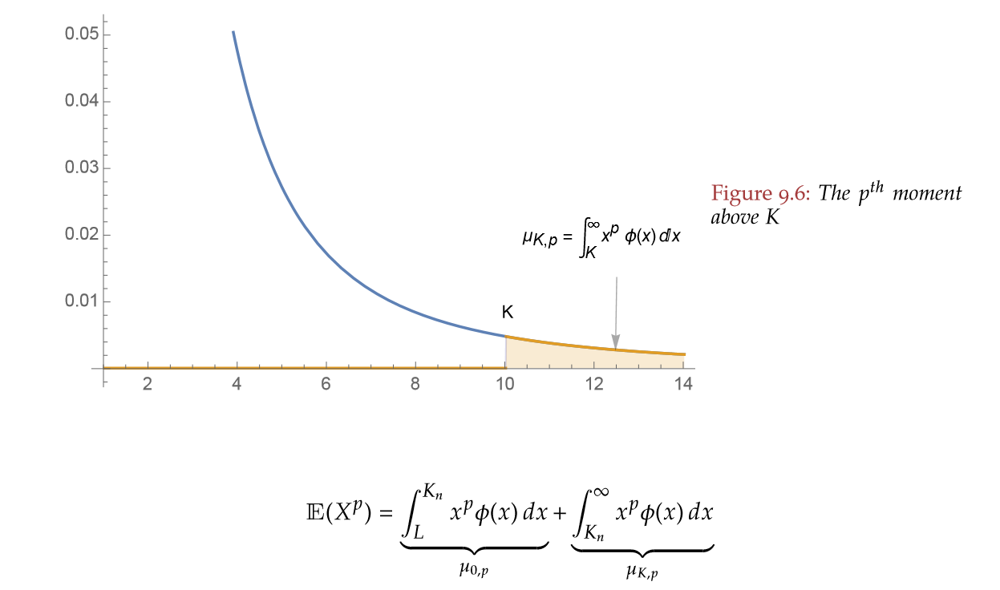
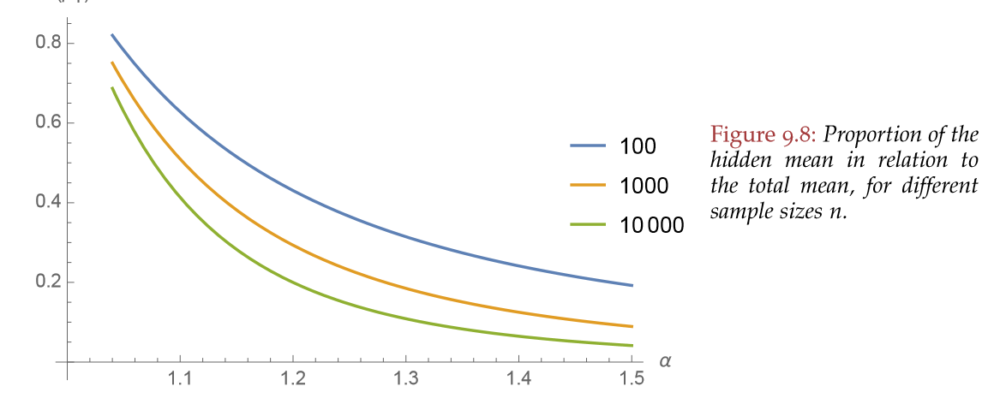
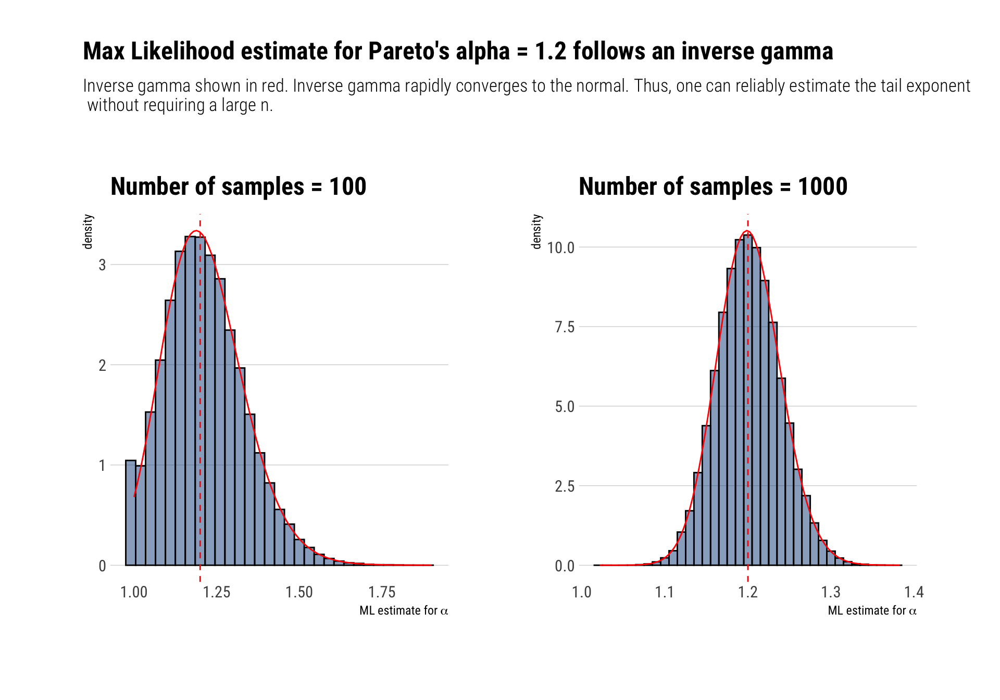
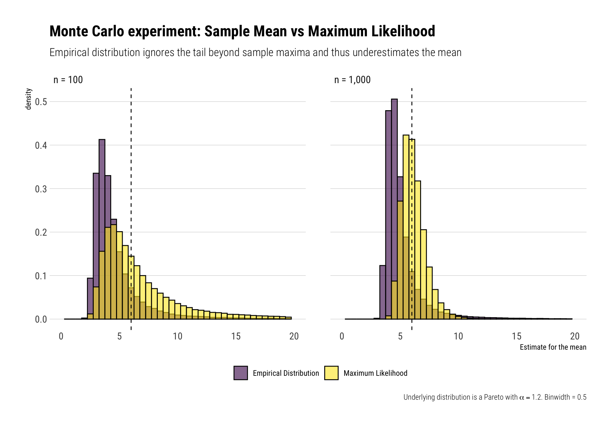

alpha <- 1.2
rpareto <- function(n) {
(1/runif(n)^(1/alpha)) # inverse transform sampling
}
estimate_alpha_ml <- function(observations) {
alpha <- length(observations)/sum(log(observations))
if (alpha < 1) {
alpha <- 1.0005
}
alpha
}
crossing(experiment = 1:10^5, sample_size = c(100, 1000)) %>%
mutate(data = map(sample_size, ~ rpareto(.)),
mean_sample = map_dbl(data, ~ mean(.)),
alpha_ml = map_dbl(data, ~ estimate_alpha_ml(.)),
mean_ml = alpha_ml / (alpha_ml - 1) ) -> simulations_resultWith fat-tailed random variables, as Nassim Taleb says, the tail wags the dogs. That is, “the tails (the rare events) play a disproportionately large role in determining the properties”. Following the presentation given by Taleb in his latest technical book: Statistical Consequences of Fat Tails, I’ll show:
- Why using the empirical distribution for estimating the moments of a fat-tailed random variable is a terrible idea.
- A less “unreliable” alternative to estimating the moments.
Why does the empirical distribution fool us?
The tails play a disproportionate role in defining the theoretical moments for fat-tailed distributions. However, if we are working with the non-parametric “empirical distribution”, we are effectively cutting the tail at our sample maximum. The rest of the tail, the possible values larger than our sample maximum, are taken out of the equation when estimating any moment through the “empirical” distribution. This hidden contribution to the theoretical mean that does not appear in the sample, however, is precisely the most important to define the theoretical moment that we are trying to estimate. Thus, our estimates with the “empirical” distribution will be terrible.
Instead of using the “empirical distribution”, what one should attempt is an intelligent extrapolation to take into consideration future maxima and their influence in our estimate. This can be done, in the case of a Pareto distribution, by estimating the tail exponent \(\alpha\) and then plug-in our estimated alpha to estimate the mean.
Visualizing the invisible tail
The tails contribute the most for any theoretical moment of any fat-tailed variable. However, when we work with the “empirical” distribution, we are ignoring the contribution of the tail beyond our sample maximum. Graphically, Taleb shows it thus:

Taleb also shows how this ignorance of the tail is most worrisome the fatter the distribution:

Estimating the tail first, then the mean
By definition the tail exponent tells us information about the tail. Specifically, about the survival’s function rate of decay. Therefore:
The tail exponent \(\alpha\) captures, by extrapolation, the low probability deviation not seen in the data, but that plays a disproportionately large share in determining the mean.
Thus, once one has taken into account the hidden tail’s influence with the estimated \(\widehat \alpha\), we can produce a less unreliable estimate of the mean (or other higher moments). However, care must be taken: with a Pareto, the mean is hardly what matters. What is really important here is the idea of first figuring out the properties of the fat-tailed distribution and then trying to estimate things.
Maximum Likelihood
For a Pareto with known minimum observation 1, things are pretty straightforward. As it is often the case in statistics, the answer is maximum likelihood. Just posit a likelihood for your data, take the log, differentiate w.r.t \(\alpha\) and you have your estimate:
\[ L(\alpha) = \prod_{i=1}^n \alpha \frac {1} {x_i^{\alpha+1}} = \alpha^n \prod_{i=1}^n \frac {1}{x_i^{\alpha+1}}. \]
\[ \ell(\alpha) = n \ln \alpha - (\alpha + 1) \sum_{i=1} ^n \ln x_i. \] \[ \widehat \alpha = \frac{n}{\sum _i \ln (x_i) }\] Luckily, this maximum likelihood estimate for \(\alpha\) works reasonably well with relatively small amounts of data. Why? Because \(\widehat \alpha\) follows an Inverse gamma distribution with shape parameter equal to \(n\) and scale parameter equal to \(\alpha n\). Although biased, the distribution of the estimator rapidly converges to a normal distribution tightly around the true \(\alpha\). Therefore, one can reliably estimate the tail exponent of the Pareto and thus understand the properties of the distribution with relatively few data.
Once we have an estimate for \(\widehat \alpha\), our estimate for the mean will be \(\dfrac{\widehat \alpha}{ \widehat \alpha - 1 }\). This is the plug-in estimator for the mean.
Maximum likelihood in practice
To demonstrate the superiority of the maximum likelihood and plug in estimator approach to the sample mean of an empirical distribution, I’ll simulate 10^5 Monte-Carlo experiments. For each experiment, I’ll sample \(n\) observations from a Pareto with \(\alpha = 1.2\) and theoretical mean \(\dfrac{1.2}{1.2 - 1} = 6\). Then, I’ll produce the maximum likelihood estimate for the tail exponent and an estimate of the mean using our plug-in estimator. At the same time, I’ll produce the regular sample mean for each experiment considering the “empirical distribution”. Finally, I’ll compare the resulting distribution of both the sample mean and the mean from the plug-in estimator.
I’ll repeat this for both \(n = 100, 1000\)
Maximum likelihood’s alpha distribution
From relatively few observations, we can reliably estimate the tail exponent of the distribution.
This goes against the usual comment that with fat-tailed variables we need more and more observations; the information about the properties of the distribution is already there with some data. Let’s check our Monte-Carlo distribution for our maximum likelihood alpha estimates for both values of \(n = 100\) and \(n= 1000\)

From ML estimator for alpha to plug-in mean
Once we have convinced ourselves that we can reliably estimate \(\alpha\), we can then use this alpha estimate to estimate the mean of the distribution. However, one must be cautious. To prepare the reader, there are going to be crazy large observations that will confuse both methods at some Monte-Carlo experiments: this is just the nature of fat-tails and the precise reason why forecasting just a single variable is so dangerous. Therefore, the mean, or any other single estimate, cannot possibly prepare us for the enormous variation that a fat-tailed variable encodes. Thus, these problems haunt even our Maximum Likelihood estimator for the mean; just less than they haunt our estimate for the mean when we use the “empirical distribution”.
These problems show themselves in the form of a large mean for the distribution of the estimates according to each method. Alongside these means, the median and other percentiles of the distributions for both type of estimation methods and both \(n\)’s appear in the table below:
| method | n | mean | percentile_25 | median | percentile_75 | maximum_value |
|---|---|---|---|---|---|---|
| Empirical Distribution | 100 | 5.74 | 3.34 | 3.99 | 5.12 | 21,870.11 |
| Maximum Likelihood | 100 | 67.14 | 4.47 | 5.93 | 8.95 | 29,762.42 |
| Empirical Distribution | 1000 | 7.66 | 4.16 | 4.64 | 5.42 | 189,816.61 |
| Maximum Likelihood | 1000 | 6.16 | 5.42 | 6.00 | 6.71 | 47.60 |
For what it’s worth, the medians of the maximum likelihood method’s distributions demonstrate its superiority versus using the mean of the empirical distribution. Once we zoom in on the majority of the sample, the histogram also shows the superiority of the maximum likelihood over the empirical distribution way of estimating the mean using the sample mean:

Just remember, superiority over the “empirical distribution” is not that big of a compliment.
Conclusion
The “empirical distribution” is a patently bad approach for fat-tailed distributions. It cuts the tail at the sample maxima. Thus, a portion of the tail is hidden and ignored in our mean estimation. A better approach is to take advantage of what one can possibly know from the data: the tail properties. For a Pareto, we can estimate its \(\alpha\) and then exploit the knowledge we gain about the tail to estimate the mean. This latter approach is less “unreliable”: